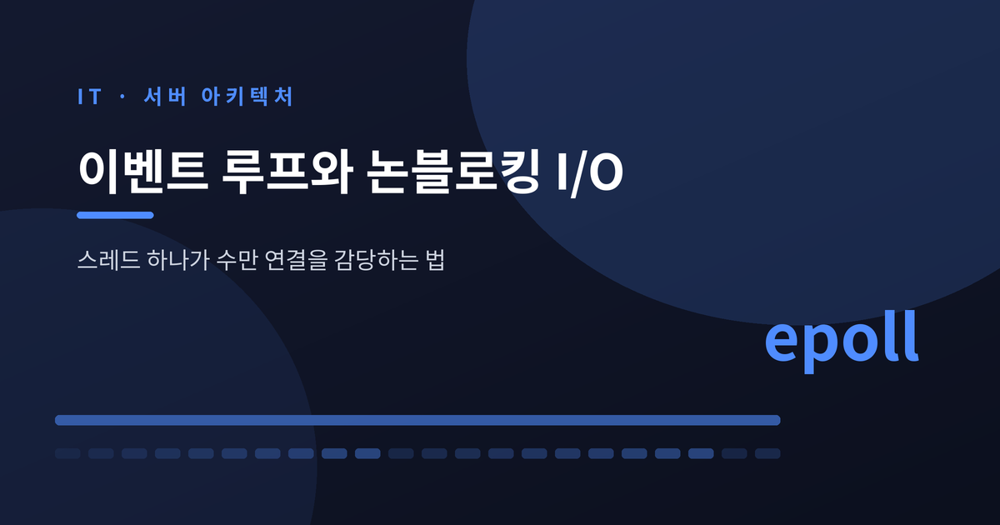
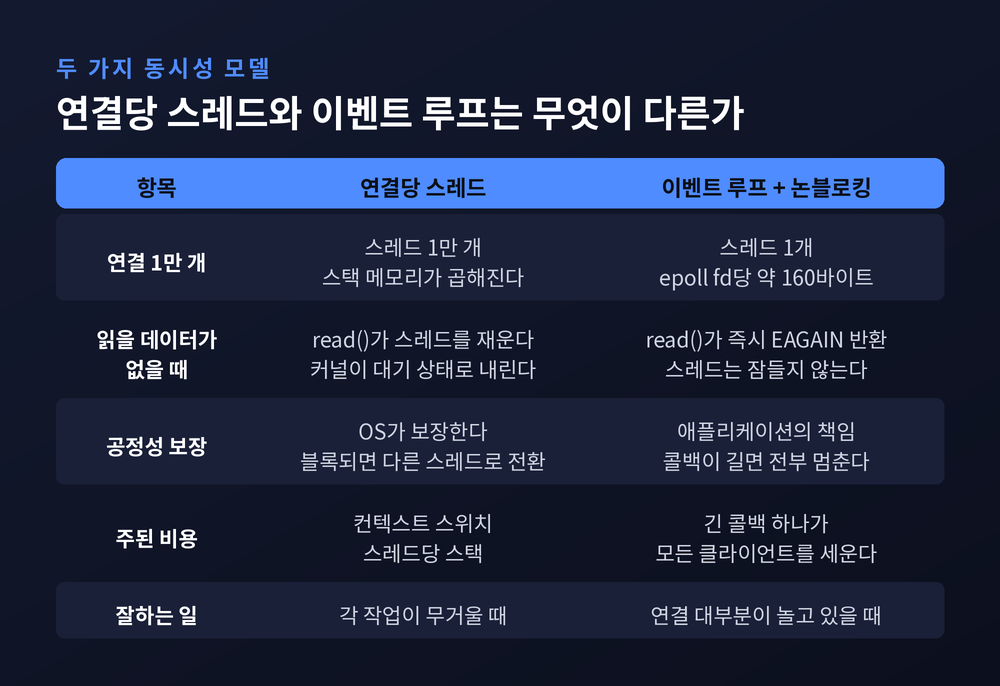
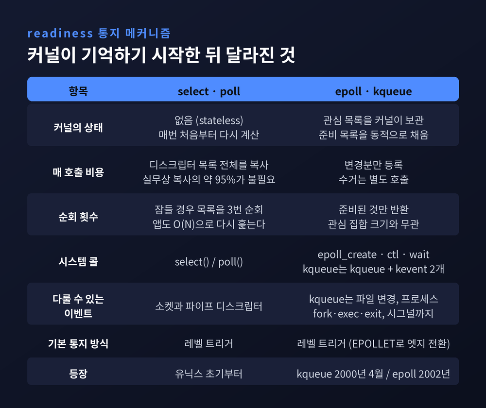
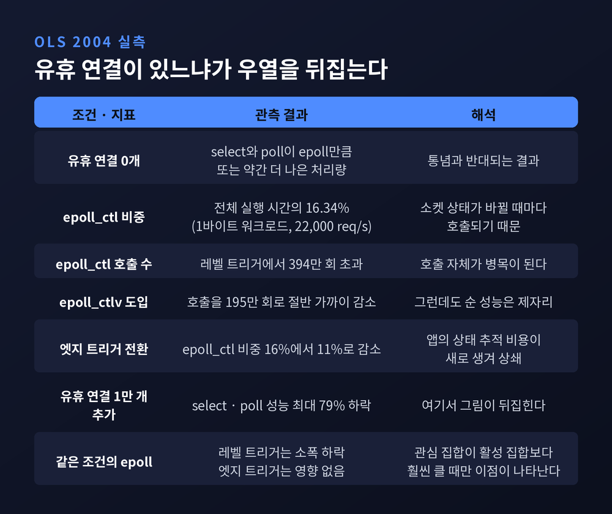
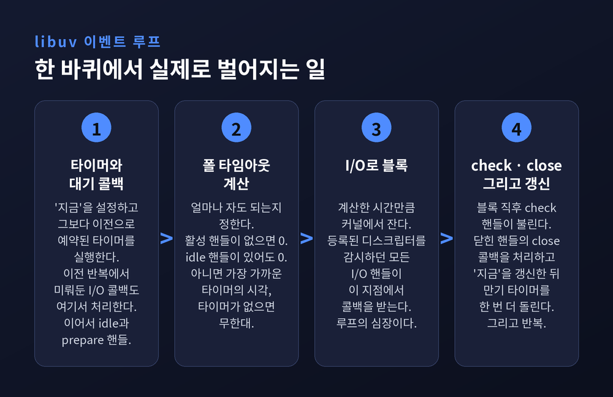
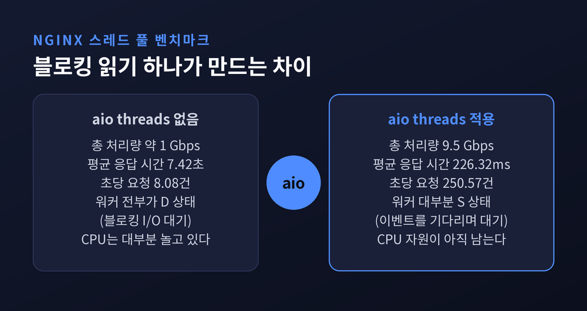
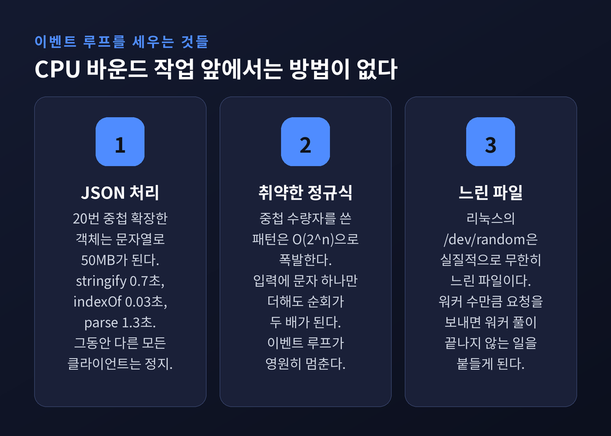

이벤트 루프와 논블로킹 I/O — 스레드 하나가 수만 연결을 감당하는 법

이번 글에서는 이벤트 루프와 논블로킹 I/O가 어떤 원리로 동작하는지 정리해 보겠습니다. 스레드 하나가 어떻게 연결 수만 개를 감당하는지, 그리고 그 구조가 어디에서 무너지는지까지 다루겠습니다.
세 줄 요약
- 논블로킹 I/O는 "기다리지 않는 것"이고, 이벤트 루프는 "커널이 알려줄 때까지만 자는 것"입니다. 둘이 합쳐져야 스레드 하나로 수만 연결이 가능해집니다.
- epoll과 kqueue의 이점은 속도가 아니라 구조입니다. 커널이 관심 목록을 기억하기 때문에, 놀고 있는 연결이 많을수록 이득이 커집니다. 모두가 바쁘면 옛 select도 밀리지 않습니다.
- 이 구조에는 명확한 한계가 있습니다. 파일 읽기와 CPU 계산은 논블로킹으로 만들 수 없어서, 스레드 풀로 밀어내거나 잘게 쪼개는 수밖에 없습니다.
연결 하나에 스레드 하나, 그 모델이 무너진 자리
C10K라는 말은 1999년 댄 케겔이 만들었습니다. 당시 Simtel의 FTP 호스트였던 cdrom.com이 1Gbps 이더넷으로 동시에 1만 클라이언트를 서비스한 사례를 근거로 들었습니다.
그때 지배적인 서버 모델은 연결당 프로세스, 또는 연결당 스레드였습니다. 새 클라이언트가 붙으면 스레드를 새로 만듭니다. 단순하고 직관적입니다. 운영체제가 알아서 스케줄링해 주니 개발자가 공정성을 신경 쓸 필요도 없습니다.
문제는 비용입니다. 스레드마다 스택 메모리가 붙고, 스레드를 오갈 때마다 컨텍스트 스위치가 일어납니다. Node.js 공식 문서는 이 대목을 이렇게 정리합니다. 더 적은 스레드로 해낼 수 있다면, 스레드를 위한 메모리와 컨텍스트 스위칭에 지불하던 시간을 클라이언트 처리에 쓸 수 있다는 것입니다.
NGINX가 워커 프로세스를 보통 CPU 코어당 하나만 두는 이유도 같습니다. 완전한 무게의 프로세스 수가 적고 일정하면, 메모리 소비가 훨씬 적고 태스크 스위칭에 CPU 사이클이 낭비되지 않습니다.
흥미로운 점은 이게 커널이 느려서 생긴 문제가 아니었다는 사실입니다. 1998년 방가와 모굴은 실험실에서 잘 돌던 이벤트 기반 서버가 실제 WAN 환경에서 성능이 나쁘다는 것을 보였습니다. 원인은 select라는 시스템 콜이 동시 연결 수를 따라가지 못하는 데 있었습니다. API의 설계 방식이 병목이었습니다.

블로킹과 논블로킹, 정확히 무엇이 다른가
블로킹 소켓에서 read()를 부르면, 읽을 데이터가 도착할 때까지 그 스레드가 잠듭니다. 커널이 스레드를 대기 상태로 내려놓고, 데이터가 오면 깨웁니다. 그래서 연결 N개를 동시에 다루려면 스레드도 N개가 필요합니다.
논블로킹 소켓은 다릅니다. 읽을 게 없으면 잠들지 않고 즉시 EAGAIN을 돌려줍니다. 애플리케이션은 "이 소켓은 지금 비어 있구나" 하고 다음 소켓으로 넘어갑니다. 스레드는 한 번도 잠들지 않습니다.
그런데 논블로킹만으로는 아직 부족합니다. 소켓 1만 개를 매번 돌면서 일일이 EAGAIN을 확인하는 건 CPU 낭비이기 때문입니다. 남은 조각이 하나 더 필요합니다. 어느 소켓이 준비됐는지 커널이 알려주는 장치입니다. select, poll, epoll, kqueue가 바로 그것입니다.
리눅스 epoll 매뉴얼도 이 둘을 묶어서 권합니다. 엣지 트리거 모드는 반드시 논블로킹 파일 디스크립터와 함께 쓰고, read()나 write()가 EAGAIN을 반환한 뒤에야 다음 이벤트를 기다리라고 명시합니다.
select와 poll이 확장되지 않은 진짜 이유
kqueue를 설계한 조너선 리먼이 논문에서 이 문제를 가장 명료하게 짚었습니다.
첫째, select와 poll은 호출할 때마다 감시할 디스크립터 목록 전체를 넘겨야 합니다. 유저 공간과 커널 사이에 메모리 복사가 두 번 일어납니다. 논문의 표현을 그대로 옮기면, 수천 개짜리 목록에서 실제로 활동이 있는 것은 보통 수백 개뿐이라 복사의 약 95%가 불필요합니다.
둘째, 반환된 뒤 애플리케이션은 목록 전체를 다시 걸어가며 커널이 표시해 둔 디스크립터를 찾아야 합니다. 커널이 이미 아는 정보를 앱이 재계산하는 셈입니다. 이 순회는 O(N)입니다.
셋째, 커널 안 사정도 좋지 않습니다. 목록을 담을 공간을 malloc()으로 잡고, 모든 항목을 훑고, 나중에 해제해야 합니다. poll이나 select가 실제로 잠드는 경우에는 디스크립터 목록을 총 세 번 순회합니다. 대기 이벤트를 찾으며 한 번, 깨어난 원인을 찾으며 한 번, 유저 공간에서 앱이 한 번입니다.
근본 원인은 하나로 모입니다. select와 poll은 설계상 상태를 갖지 않습니다. 커널이 시스템 콜 사이에 "이 프로세스가 무엇에 관심 있는지"를 기억하지 않으니 매번 처음부터 다시 계산합니다.
워털루대 연구진의 표현도 같은 곳을 가리킵니다. select와 poll은 반환된 이벤트 수가 아니라 관심 집합의 크기에 비례하는 일을 합니다. 관심 집합이 활성 집합보다 훨씬 클 때 성능이 무너지는 이유가 여기 있습니다.
epoll과 kqueue — 커널이 기억하기 시작하다
해법의 방향은 1999년 방가·모굴·드루셸이 제시했습니다. 관심의 선언과 이벤트의 수거를 분리하자는 것입니다. epoll과 kqueue는 둘 다 이 아이디어의 구현입니다.
epoll의 중심 개념은 epoll 인스턴스입니다. 유저 관점에서는 두 개의 리스트를 담은 컨테이너입니다. 하나는 감시하겠다고 등록한 디스크립터들의 관심 목록이고, 다른 하나는 실제로 I/O가 가능한 준비 목록입니다. 준비 목록은 관심 목록의 부분집합이며, I/O 활동에 따라 커널이 동적으로 채웁니다.
시스템 콜은 셋으로 나뉩니다. epoll_create()로 인스턴스를 만들고, epoll_ctl()로 관심 목록을 고치고, epoll_wait()로 이벤트를 받습니다. 매뉴얼은 마지막 호출을 "준비 목록에서 항목을 꺼내오는 것"으로 생각하라고 안내합니다.
kqueue는 조금 다른 길을 갔습니다. FreeBSD 메인 트리에 커밋된 것이 2000년 4월이고, 시스템 콜은 kqueue()와 kevent() 단 두 개입니다. kevent() 하나가 등록과 수거를 겸합니다. 변경사항은 changelist로 넣고 발생한 이벤트는 eventlist로 받습니다. 시스템 콜 횟수를 줄이려는 의도적 설계입니다.
kqueue의 진짜 차별점은 필터입니다. 소켓 읽기·쓰기뿐 아니라 비동기 I/O 완료, 파일의 생성·삭제·이름 변경, 프로세스의 fork·exec·exit, 시그널까지 하나의 큐로 받습니다. 예전에는 aio 완료는 aiowait으로, 시그널은 siginfo로 각각 다른 인터페이스를 써야 했습니다. 지금은 kevent() 한 번이면 끝납니다.
메모리 비용도 짚어둘 만합니다. epoll 매뉴얼에 따르면 등록된 디스크립터 하나당 비용은 64비트 커널에서 약 160바이트입니다. 연결 1만 개면 약 1.6MB입니다. 스레드 하나에 수 MB 스택이 붙던 모델과는 자릿수 자체가 다릅니다.
레벨 트리거와 엣지 트리거의 차이도 알아두시면 좋겠습니다. 매뉴얼의 예시가 명료합니다. 파이프에 2KB를 쓰고 epoll_wait()이 준비됨을 반환한 뒤 1KB만 읽었다고 해보겠습니다. 엣지 트리거였다면 다음 epoll_wait() 호출은 버퍼에 1KB가 남아 있는데도 무한정 멈출 수 있습니다. 상태가 변할 때만 알려주기 때문입니다. 기본값인 레벨 트리거는 조건이 유지되는 한 계속 알려줍니다. 매뉴얼은 레벨 트리거 epoll을 "그저 더 빠른 poll"이라고 표현합니다.

다만, epoll이 언제나 이기지는 않습니다
여기서 균형을 하나 잡고 가야겠습니다. 통념은 "epoll은 O(1), select는 O(N)이니 epoll이 항상 낫다"입니다. 실측은 그렇게 단순하지 않았습니다.
2004년 워털루대 연구진이 오타와 리눅스 심포지엄에 낸 논문이 이 문제를 정면으로 다뤘습니다. 듀얼 2.4GHz Xeon 서버에 클라이언트 8대를 붙이고, µserver라는 고성능 웹서버로 select·poll·epoll을 같은 코드베이스에서 비교했습니다.
결과는 뜻밖이었습니다. 유휴 연결이 없는 워크로드에서는 select와 poll이 epoll만큼, 때로는 약간 더 나은 처리량을 냈습니다.
프로파일링이 원인을 알려줬습니다. 1바이트 파일을 반복 요청하는 워크로드에서 초당 22,000 요청 지점을 재보니, epoll_ctl 하나가 전체 실행 시간의 16.34%를 잡아먹고 있었습니다. 소켓 상태가 바뀔 때마다 호출되기 때문입니다. 레벨 트리거 epoll의 epoll_ctl 호출 횟수는 394만 회를 넘었습니다.
연구진은 호출을 줄이려고 여러 시도를 했습니다. 여러 epoll_ctl을 하나로 묶는 epoll_ctlv라는 새 시스템 콜까지 만들어 호출을 195만 회로 절반 가까이 줄였습니다. 순 성능은 나아지지 않았습니다. 엣지 트리거로 바꾸자 epoll_ctl 비중이 16%에서 11%로 떨어졌지만, 앱이 소켓 상태를 직접 추적하는 비용이 새로 생겨 처리량은 제자리였습니다.
그런데 유휴 연결 1만 개를 미리 붙여놓자 그림이 완전히 뒤집혔습니다. select와 poll의 성능이 최대 79% 떨어졌습니다. 레벨 트리거 epoll은 소폭 하락에 그쳤고, 엣지 트리거 epoll은 아예 영향을 받지 않았습니다.
두 결과는 모순이 아닙니다. epoll의 이점은 "관심 집합이 활성 집합보다 훨씬 클 때"만 발현되는 구조적 이점입니다. 실제 인터넷 서버가 epoll을 필요로 하는 이유는, WAN 환경에서 연결 대부분이 대부분의 시간 동안 놀고 있기 때문입니다.

이벤트 루프 한 바퀴에서 실제로 벌어지는 일
이제 루프 자체를 들여다보겠습니다. Node.js가 쓰는 libuv의 공식 설계 문서가 한 바퀴를 13단계로 기술하고 있습니다. 핵심만 추리면 이렇습니다.
먼저 루프는 '지금'이라는 시각 개념을 설정하고, 그보다 이전으로 예약된 타이머들의 콜백을 실행합니다. 다음으로 루프가 아직 살아 있는지 확인합니다. 활성 핸들이 있거나, 활성 요청이 있거나, 닫히는 중인 핸들이 있으면 살아 있는 것으로 봅니다.
그다음 이전 반복에서 다음으로 미뤄진 I/O 콜백을 처리하고, idle 핸들과 prepare 핸들의 콜백을 부릅니다. prepare 핸들은 루프가 I/O로 블록되기 직전에 불리는 자리입니다.
여기가 이 루프의 심장입니다. 폴 타임아웃을 계산합니다. 얼마나 오래 커널에서 자도 되는지 정하는 단계입니다. 규칙은 명확합니다. 활성 핸들이나 요청이 하나도 없으면 0입니다. 활성 idle 핸들이 있어도 0, 닫히기를 기다리는 핸들이 있어도 0입니다. 어느 것에도 해당하지 않으면 가장 가까운 타이머의 시각을 쓰고, 활성 타이머가 없으면 무한대입니다.
그리고 루프가 그만큼 I/O로 블록합니다. 등록된 디스크립터를 읽기나 쓰기로 감시하던 모든 I/O 핸들이 이 지점에서 콜백을 받습니다. 블록이 끝나면 check 핸들이 불리고, 닫힌 핸들의 close 콜백이 불리고, '지금'을 갱신한 뒤 만기 타이머를 한 번 더 돌립니다.
여기서 한 가지 함정이 있습니다. '지금'은 다음 반복 전까지 다시 갱신되지 않습니다. 그래서 다른 타이머를 처리하는 동안 만기된 타이머는 그 자리에서 실행되지 않고 다음 반복까지 밀립니다.
정리하면 이렇습니다. 스레드가 놀지도 않고 헛돌지도 않는 비결은 "블록해도 되는 시간을 정확히 계산해서 딱 그만큼만 커널에서 자는 것"입니다.
libuv 문서가 굵게 강조하는 문장도 함께 기억해 두시면 좋겠습니다. libuv는 비동기 파일 I/O를 위해 스레드 풀을 쓰지만, 네트워크 I/O는 언제나 단일 스레드에서 수행됩니다. 플랫폼별로 리눅스는 epoll, macOS와 BSD는 kqueue, 솔라리스는 event ports, 윈도우는 IOCP를 씁니다.

파일은 왜 예외인가 — 스레드 풀이라는 우회로
여기서 이 구조의 첫 번째 한계가 드러납니다. libuv 문서는 스스로 이렇게 인정합니다. 네트워크 I/O와 달리 libuv가 기댈 수 있는 플랫폼별 파일 I/O 프리미티브가 없다는 것입니다. 그래서 현재 접근법은 블로킹 파일 연산을 스레드 풀에서 돌리는 것입니다.
스레드 풀에서 도는 것은 셋입니다. 파일시스템 연산, DNS 함수인 getaddrinfo와 getnameinfo, 그리고 사용자가 직접 넣은 코드입니다. 문서는 곧바로 경고를 덧붙입니다. "스레드 풀 크기는 상당히 제한적임을 유념하라."
실제로 그렇습니다. 기본 크기가 4입니다. 시작할 때 UV_THREADPOOL_SIZE 환경변수로 바꿀 수 있고 절대 최대치는 1024입니다. 이 풀은 전역이며 모든 이벤트 루프가 공유합니다.
리눅스의 사정은 더 답답합니다. NGINX 개발자 발렌틴 바르테네프의 설명에 따르면, FreeBSD는 파일 읽기와 전송을 위한 쓸 만한 비동기 인터페이스를 제공합니다. 리눅스도 비동기 파일 읽기 인터페이스는 있지만 O_DIRECT 플래그를 요구합니다. 이는 파일 접근이 메모리 캐시를 통째로 우회한다는 뜻이고, 많은 경우 최적과는 거리가 멉니다.
그래서 NGINX도 스레드 풀을 도입했습니다. 1.7.11 버전이었습니다. 그 효과를 잰 벤치마크의 숫자가 인상적입니다.
측정 환경은 이렇습니다. Xeon E5645 두 개, 48GB RAM, 10Gbps 랜카드, 하드디스크 4개 RAID10. 메모리에 절대 들어가지 않도록 4MB 파일로 256GB의 랜덤 데이터를 만들었습니다. 한쪽 클라이언트가 연결 200개로 파일을 무작위로 요청해 디스크를 계속 때리고, 다른 클라이언트가 연결 50개로 항상 메모리에 있는 파일 하나만 반복 요청합니다.
스레드 풀 없이 돌렸을 때, 총 처리량은 약 1Gbps였습니다. top을 보니 워커 프로세스가 전부 D 상태, 즉 블로킹 I/O 대기였습니다. CPU는 대부분 놀고 있었습니다. 메모리에 있는 파일을 요청한 쪽의 평균 응답 시간은 7.42초, 초당 요청 수는 8.08이었습니다.
설정에 aio threads; 한 줄을 넣고 다시 쟀습니다. 처리량은 9.5Gbps로 올랐습니다. 네트워크 인터페이스의 실질 최대치에 이미 닿아서 더 낼 수도 있었다고 합니다. 평균 응답 시간은 226.32밀리초, 초당 요청 수는 250.57이 됐습니다. 지연은 33배 줄었고 처리량은 31배 늘었습니다.
다만 같은 글의 저자가 바로 다음 절에 단서를 붙였습니다. 소제목이 "그래도 만능 해결책은 아니다"입니다. 대부분의 파일 읽기는 느린 하드디스크를 건드리지 않습니다. RAM이 충분하면 운영체제가 자주 쓰는 파일을 페이지 캐시에 올려두기 때문입니다. 페이지 캐시에서 읽는 것은 빠르고, 이를 블로킹이라 부를 수 없습니다. 반면 스레드 풀로 넘기는 것 자체에는 오버헤드가 있습니다.
저 9.5배는 성능 지표가 아니라 조건이 만든 숫자입니다. 데이터셋이 RAM에 들어가는 평범한 상황이라면, NGINX는 스레드 풀 없이 이미 최적으로 동작합니다.

CPU 바운드 작업 앞에서는 방법이 없습니다
두 번째 한계는 더 근본적입니다. 파일 읽기는 스레드 풀로 밀어낼 수라도 있지만, CPU 계산은 어디로도 밀어낼 수 없습니다. 코어가 그 일을 하는 동안은 그냥 하는 겁니다.
Node.js 공식 가이드가 이 지점을 아주 솔직하게 다룹니다. 문서에 따르면 Node.js에는 이벤트 루프 하나와 워커 k개가 있습니다. 두 종류 모두 한 번에 하나의 활동만 합니다. 어느 쪽이든 오래 걸리면 그 스레드는 블록된 것입니다.
Apache 같은 클라이언트당 스레드 시스템에서는 한 스레드가 블록되면 운영체제가 중단시키고 다른 클라이언트에게 차례를 줍니다. 공정성을 OS가 보장합니다. Node.js는 적은 스레드로 많은 클라이언트를 다루므로 그 보장이 사라집니다. 공식 문서의 표현이 인상적입니다. 클라이언트를 공정하게 대우하는 일은 이제 당신 애플리케이션의 책임이라는 것입니다.
수치가 붙은 사례를 보겠습니다. 문서는 {a:1}에서 시작해 스무 번 중첩 확장한 객체를 예로 듭니다. 문자열로 만들면 50MB가 됩니다. JSON.stringify에 0.7초, 50MB 문자열에 indexOf를 도는 데 0.03초, JSON.parse에 1.3초가 걸렸습니다. 이 세 줄이 도는 동안 그 서버의 다른 모든 클라이언트는 정지 상태입니다.
정규식은 더 무섭습니다. 매칭은 보통 입력을 한 번 훑는 O(n)이라 생각하지만, 어떤 패턴은 O(2^n)이 됩니다. 입력에 문자 하나만 더해도 순회 횟수가 두 배가 된다는 뜻입니다. 문서가 든 취약 예시는 리눅스 경로를 검증하려고 쓴 /(\/.+)+$/입니다. 중첩 수량자를 썼습니다. 클라이언트가 슬래시 100개에 개행 문자 하나를 붙여 보내면, 이벤트 루프는 사실상 영원히 그 자리에 머뭅니다.
워커 풀도 안전하지 않습니다. 서버가 임의 파일을 읽도록 유도할 수 있다면, 공격자는 리눅스에서 /dev/random을 지정하면 됩니다. 실질적으로 무한히 느린 파일입니다. 요청 k개만 보내면 워커 전부가 영영 끝나지 않는 일을 붙들고 있게 됩니다.
문서가 정리한 원칙 한 줄이 이 문제의 본질을 담고 있습니다. 긴 태스크 하나는 완료될 때까지 사실상 워커 풀의 크기를 1 줄이는 효과를 냅니다.
대책은 둘뿐입니다. 하나는 분할입니다. 계산을 잘게 쪼개 각 조각이 끝날 때마다 다른 이벤트에 차례를 양보하게 합니다. 다만 분할은 이벤트 루프만 쓰므로 멀티코어를 활용하지 못합니다. 다른 하나는 오프로딩, 즉 워커 풀로 넘기는 것입니다. 대가는 통신 비용입니다. 이벤트 루프만이 애플리케이션의 자바스크립트 상태를 볼 수 있어서, 주고받는 객체를 매번 직렬화하고 역직렬화해야 합니다.
CPU 바운드 태스크에는 또 하나의 제약이 붙습니다. 워커는 스케줄될 때만 진행되고 논리 코어 위에 올라가야 합니다. 논리 코어가 4개인데 워커를 5개 두면 그중 하나는 진행하지 못합니다. 메모리와 스케줄링 오버헤드만 지불하고 얻는 것이 없습니다.
공식 문서의 마지막 문장은 담백하게 한계를 인정합니다. 서버가 복잡한 계산에 크게 의존한다면 Node.js가 정말 적합한지 생각해 봐야 한다는 것입니다. Node.js는 I/O 바운드 작업에 탁월하지만, 비싼 계산에는 최선이 아닐 수 있습니다.

준비에서 완료로 — io_uring
마지막으로 최근의 흐름을 짧게 덧붙이겠습니다.
2019년 5월 리눅스 5.1에 옌스 악스보가 io_uring을 넣었습니다. 구조는 공유 메모리에 놓인 락 프리 링 두 개입니다. 유저 공간이 제출 큐에 하고 싶은 I/O를 적어 넣으면, 커널이 완료 큐에 결과를 올려놓습니다.
모델 자체가 다릅니다. epoll은 준비 모델입니다. 디스크립터가 준비됐다고 알려줄 뿐, 실제로 읽는 것은 애플리케이션의 몫입니다. io_uring은 완료 모델입니다. I/O 연산이 실제로 끝났다고 알려줍니다. 이벤트마다 시스템 콜을 반복할 필요가 없고, 유저와 커널을 오가는 컨텍스트 스위치도 줄어듭니다.
동기는 하드웨어의 변화였습니다. 장치가 극도로 빨라지면서, 인터럽트 기반 처리가 완료를 폴링하는 것만큼 효율적이지 않게 된 것입니다. 그리고 이것은 앞서 본 리눅스 파일 I/O의 오랜 딜레마에 대한 답이기도 합니다. O_DIRECT 없이 버퍼드 파일 I/O를 비동기로 다룰 길이 열렸습니다.
정리하면 이렇습니다. 이벤트 루프가 수만 연결을 감당하는 비결에 마법은 없습니다. 커널에게 관심 목록을 기억시키고, 잠들어도 되는 시간을 매 바퀴 정확히 계산해서, 그만큼만 자는 것입니다. 나머지 시간에는 준비된 것만 골라서 처리합니다.
그래서 이 구조가 진짜로 잘하는 일은 하나입니다. 기다리는 일을 대신 기다려 주는 것입니다.
거꾸로 말하면 기다림이 아닌 일 앞에서는 이 구조가 무력합니다. 디스크가 실제로 느릴 때, 정규식이 지수 시간으로 폭발할 때, 코어가 계산으로 꽉 찼을 때가 그렇습니다. 스레드 풀도 io_uring도 그 한계를 옮겨놓을 뿐 없애지는 못합니다.
이벤트 루프를 도입하면 서버가 빨라지느냐고 물으신다면, 저는 이렇게 답하겠습니다. 연결 대부분이 대부분의 시간 동안 놀고 있다면 그렇습니다. 모두가 쉬지 않고 계산만 하고 있다면, 바꿔야 할 것은 아마 다른 곳에 있을 것입니다.